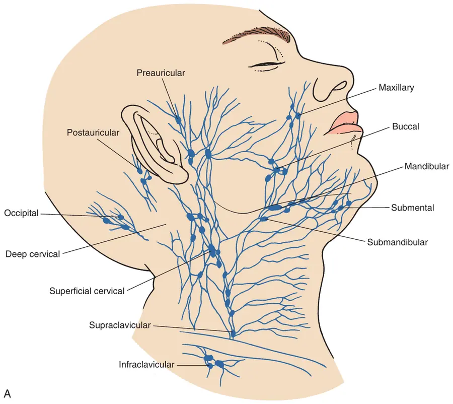

نسخه استخراجشده؛ ترجمه یا تأیید علمی انجام نشده است. وضعیت: captured
و یک اصطلاح که باید دقیق بدانی — فلاکچوانس: «فلاکچوانت» اصطلاحی است برای توصیف حرکت موجمانندی که هنگام لمس دوانگشتی ضایعهای با دیوارههای غیرصلب که حاوی مایع است، حس میشود. این نشانهی ارزشمند را میتوان با لمس ریتمیک با دو یا چند انگشت فراخواند: در حالی که یک انگشت فشار وارد میکند، انگشت مقابل ضربهی منتقلشده از میان حفرهی پُر از مایع را حس میکند.

۹ — وجود ضربان. لمس یک توده ممکن است ضربان ریتمیکی را آشکار کند که جزء عروقی قابلتوجهی را مطرح میکند. این حس میتواند ظریف باشد و بهویژه هنگام برخورد با ضایعات داخلاستخوانی اهمیت دارد. ضربان میتواند با لرزش قابللمسی به نام تریل (thrill) همراه باشد. اگر تریل لمس شد، سمع ناحیه با گوشی میتواند برویی (bruit) یا سوفل شنیدنی را آشکار کند.
و اینجا یک ممنوعیت صریح داریم: اعمال تهاجمی روی ضایعات دارای تریل، برویی، یا هر دو باید پرهیز شود، و بیماران باید برای درمان به متخصص ارجاع شوند — چون اگر مداخلهی جراحی (بیوپسی) انجام شود، خونریزی تهدیدکنندهی حیات میتواند رخ دهد.
۱۰ — معاینهی گرههای لنفاوی ناحیهای. بیپرده بگوییم: هیچ ارزیابیای از یک ضایعهی دهانی بدون معاینهی کامل گرههای لنفاوی ناحیهای کامل نیست.
و زمانبندیاش حیاتی است: این معاینه باید پیش از هر عمل بیوپسی انجام شود. چرا؟ چون گاهی پس از عمل جراحی مانند بیوپسی، لنفادنیت در گرههای ناحیهای ایجاد میشود و آنگاه یک معمای تشخیصی میسازد: تفکیک لنفادنیت واکنشی بهعنوان عارضهی جراحی، از عفونت یا التهاب ناحیهای تصادفی، یا از گسترش متاستاتیک تومور مورد بحث، دشوار میشود.
تکنیک معاینه: معاینهی استاندارد تنها به مشاهده و لمس ساده نیاز دارد. مقایسهی سمت چپ و راست با استفاده از سه انگشت میانی برای لمس سبک اغلب مفید است. حرکات باید آهسته و ملایم باشند، با انگشتانی که بهسبکی در جهت عمودی و افقی و نیز حرکت چرخشی روی هر ناحیه میلغزند.
و یک نکتهی سنی مهم: در بزرگسالان، گرههای لنفاوی طبیعی قابللمس نیستند مگر آنکه با التهاب یا نئوپلازی بزرگ شده باشند — ولی گرههای گردنی تا قطر ۱ سانتیمتر اغلب در کودکان تا سن ۱۲ سالگی قابللمساند و عموماً یافتهای غیرطبیعی به شمار نمیروند.
پنج ویژگی که باید در ثبت یافتههای گره لنفاوی بهطور روتین مستند شوند:
و یک اصطلاح توصیفی: وقتی چند گره اندکی بزرگاند ولی بهسختی قابللمساند، حسی مانند ساچمهی پرنده میدهند و «گرههای شاتی» (shotty nodes) نامیده میشوند.
و معاینه باید روشمند باشد و این هفت گروه را دربر بگیرد: ۱ — اکسیپیتال، ۲ — پیشگوشی و پسگوشی، ۳ — مندیبولار، سابمندیبولار، و سابمنتال، ۴ — زنجیرهی عمقی قدامی گردنی، ۵ — گرههای سطحی گردنی (در امتداد عضلهی استرنوکلایدوماستوئید)، ۶ — زنجیرهی عمقی خلفی گردنی، ۷ — گرههای فوقترقوهای. گرههای باکال ممکن است بهطور روتین قابللمس باشند یا نباشند.